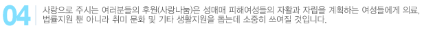
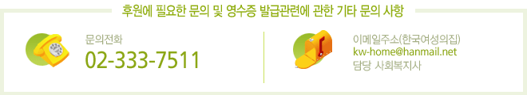

- 후원계좌
-
| 입금은행(계좌) |
하나은행: 379-810001-18204 |
| 예금주 |
한국여성의집 |
- 재정후원
-
개인 또는 교회 기관 기업체 외에서 특별한 목적 또는 일정구좌 (1구좌 5,000원)외에 정기/비정기적으로 후원하실수 있습니다.
- 결연후원
-
개인이나 단체와 맺는 사랑의 끈입니다.
정기/비정기적으로 방문 또는 후원금품으로 금전적인 도움 이외에 정서적으로 지지해 주실 수 있고, 영화 문화 공연 등의 지원기회를 통해 좋은 멘토가 되어 주실 수 있습니다.
- 물품후원
-
각종 물품 (예:의류, 침구, 도서, 운동기구, 생필품, 간식, 기타 쿠폰 외)등 마음과 정성으로 주시는 것이며 영혼을살찌우고 감사로 나아가는 밑거름이 될 것입니다.
